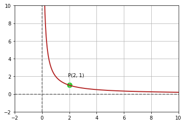

| PolarSPARC |
Introduction to Calculus - Part 2
| Bhaskar S | 03/13/2021 |
Differential Calculus
As indicated in Part 1, Differential Calculus is the branch of Calculus that focuses on rate of change of some variable with respect to another.
Basics
A line is called Tangent to a non-linear function f(x) (a curve) if it passes through (or meets the function f(x) at precisely one point.
For a linear function (a line), it is much easy to compute the rate of change (the slope) of that function as it is a constant value between any two points along the line. In other words, ratio of change in one variable to the other (the slope) is a constant. When the function is non-linear (a curve), then the rate of change varies from point to point and is NOT a constant. Intuitively, when two variables are related to one another in a non-linear fashion, the way to understand their relationship (how a change in one variable impacts the other) is to plot a graph and study the slope of the tangent line (rate of change) at various points along the curve.
The process of finding the rate of change (steepness) of a function is called Differentiation and the rate of change of the function is the Derivative.
The following plot illustrates the graph of a non-linear polynomial function \(y = x^2 + x + 1\):
Let P be an arbitrary point on the curve at \((x_1, y_1)\) as shown in the illustration below:
To make it concrete, for the point P, let x = 1. Then, using the equation for f(x), we get y = 3. Therefore, the point P is at (1, 3).
We desire to find the slope (rate of change of the variable y with respect to the variable x) at the point P. From Part 1, we know the slope can be computed as follows:
Slope m = \(\Large{\frac{rise}{run} = \frac{\Delta{y}}{\Delta{x}} = \frac{y_2 - y_1}{x_2 - x_1}}\)
Let Q be another arbitrary point on the curve at \((x_2, y_2)\) as shown in the illustration below:
To make it concrete, for the point Q, let x = 3. Then, using the equation for f(x), we get y = 13. Therefore, the point Q is at (3, 13).
A line passing through two points on a curve is referred to as a Secant line.
The following illustration shows a secant line passing through the points P and Q:
From the above illustration, the slope of the secant line passing through the two points P and Q on a curve will provide an approximation of the slope (or rate of change of y with respect to x) at the point P. Note is is just an approximation and not precise.
To make it concrete, if P is at (1, 3) and Q is at (3, 13), then the slope m = \(\Large{\frac{13 - 3}{3 - 1} = \frac{10}{2} }\) = 5.
If the point Q moves closer to the point P as shown in the illustration below, then the slope of the secant line is a much better approximation than the one from the previous illustration:
To make it concrete, for the point Q, let x = 1.5. Then, using the equation for f(x), we get y = 4.75. Therefore, the point Q is at (1.5, 4.75) and the slope of the line at P becomes 3.5, which is much better than 5.
As the point Q moves closer and closer to the point P, then the secant line between P and Q becomes closer and closer to a tangent line at the point P. The following illustration shows the points P and Q as close as possible to each other and the secant line becomes almost a tanget line at the point P:
To make it concrete, for the point Q, let x = 1.01. Then, using the equation for f(x), we get y = 3.03. Therefore, the point Q is at (1.01, 3.03) and the slope of the line at P becomes 3.009, which is much better than 3.5. Optimizing further, if for the point Q, we let x = 1.001, then y = 3.003, and the slope at P becomes 3.0009, which is approaching 3.
In other words, the slope of the tanget line at the point P will provide the most precise measure of the rate of change of y with respect to x (or the slope) at the point P. That is the Derivative of the polynomial function f(x) at point P.
Let us now deduce the concept of derivative of a tangent line at a point on the curve from the mathematical angle. We know the slope of a line is as follows:
m = \(\Large{\frac{y_2 - y_1}{x_2 - x_1}}\)
Let the infinitesimal distance between x2 and x1 be denoted by \(\Delta{x}\). In other words:
\(x_2 - x_1 = \Delta{x}\)
This implies:
\(x_2 = x_1 + \Delta{x}\)
Next, given f(x) represents the equation of y with respect to x, \(y = f(x)\).
Therefore,
\(y_2 - y_1 = f(x_1 + \Delta{x}) - f(x_1)\)
Therefore, the equation of slope can be re-written as:
m = \(\Large{\frac{f(x_1 + \Delta{x}) - f(x_1)}{\Delta{x}}}\)
As \(\Delta{x}\) becomes smaller and smaller meaning that it approaches zero (0), we get closer and closer to the value of the slope at the given point.
In other words, the slope of the tangent line is:
m = \(\lim_{\Delta{x} \to 0} \Large{\frac{f(x + \Delta{x}) - f(x)}{\Delta{x}}}\)
This is the Derivate of the function f(x) at x.
The derivate of a function f(x) is represent as \(f'(x)\) or as \(\Large{\frac{dy}{dx}}\), which reads as the derivative of y with respect to x. Sometimes it is also referred to as the Delta Form.
Let us now find the derivative of the above polynomial function \(f(x) = x^2 + x + 1\) using the Delta form and determine the slope at x = 1.
|
The derivate of a function f(x) is \(f'(x) = \lim_{\Delta{x} \to 0} \Large{\frac{f(x + \Delta{x}) - f(x)}{\Delta{x}}}\) \(f(x + \Delta{x}) = (x + \Delta{x})^2 + (x + \Delta{x}) + 1 = (x^2 + 2x\Delta{x} + \Delta{x}^2) + (x + \Delta{x}) + 1\) \(f(x + \Delta{x}) - f(x) = [(x^2 + 2x\Delta{x} + \Delta{x}^2) + (x + \Delta{x}) + 1] - (x^2 + x + 1) = \Delta{x}^2 + 2x\Delta{x} + \Delta{x} = \Delta{x}(\Delta{x} + 2x + 1)\) \(\Large{\frac{f(x + \Delta{x}) - f(x)}{\Delta{x}}} = \Large{\frac{\Delta{x}(\Delta{x} + 2x + 1)}{\Delta{x}}}\) = \(\Delta{x} + 2x + 1\) Therefore, \(f'(x) = \lim_{\Delta{x} \to 0} \Large{\frac{f(x + \Delta{x}) - f(x)}{\Delta{x}}}\) = \(\lim_{\Delta{x} \to 0} \Delta{x} + 2x + 1 = 2x + 1\) RESULT: the slope of f(x) at x = 1 is \(2(1) + 1 = 3\). |
Let us look at an example now.
| Example-1 | Find the slope of the tangent line to the curve y = \(\Large{\frac{2}{x}}\) at the point (2, 1) on the curve |
|---|---|
|
Given f(x) = \(\Large{\frac{2}{x}}\) and the point P (x, y) = (2, 1), the following is the illustration of plotting the function \(f(x)\) on a graph:

Fig.7
The derivate of a function f(x) is \(f'(x) = \lim_{\Delta{x} \to 0} \Large{\frac{f(x + \Delta{x}) - f(x)}{\Delta{x}}}\) \(f(x + \Delta{x} - f(x)\) = \(\Large{\frac{2}{x + \Delta{x}} - \frac{2}{x}}\) = \(\Large{\frac{2x - 2(x + \Delta{x})}{x(x + \Delta{x})}}\) = \(\Large{-\frac{2\Delta{x}}{x(x + \Delta{x})}}\) \(\Large{\frac{f(x + \Delta{x}) - f(x)}{\Delta{x}}}\) = \(\Large{-\frac{2\Delta{x}}{x(x + \Delta{x})\Delta{x}}}\) = \(\Large{-\frac{2}{x(x + \Delta{x})}}\) Therefore, \(f'(x) = \lim_{\Delta{x} \to 0} \Large{\frac{f(x + \Delta{x}) - f(x)}{\Delta{x}}}\) = \(\lim_{\Delta{x} \to 0} \Large{-\frac{2}{x(x + \Delta{x})}}\) = \(\Large{-\frac{2}{x^2}}\) RESULT: the slope of f(x) at x = 2 is \(\Large{-\frac{2}{4}}\) = \(\Large{-\frac{1}{2}}\). The following is the illustration of plotting the function \(f(x)\) on a graph with the tangent line: Fig.8
|
|
Let us look at another example.
| Example-2 | Find the slope and the equation of the tangent line to the curve y = \(\sqrt{x}\) at the point (4, 2) on the curve |
|---|---|
|
Given f(x) = \(\sqrt{x}\) and the point P (x, y) = (4, 2), the following is the illustration of plotting the function \(f(x)\) on a graph: Fig.9
The derivate of a function f(x) is \(f'(x) = \lim_{\Delta{x} \to 0} \Large{\frac{f(x + \Delta{x}) - f(x)}{\Delta{x}}}\) \(f(x + \Delta{x} - f(x)\) = \(\sqrt{(x + \Delta{x})} - \sqrt{x}\) \(\Large{\frac{f(x + \Delta{x}) - f(x)}{\Delta{x}}}\) = \(\Large{\frac{\sqrt{(x + \Delta{x})} - \sqrt{x}}{\Delta{x}}}\) = \(\Large{(\frac{\sqrt{(x + \Delta{x})} - \sqrt{x}}{\Delta{x}}).(\frac{\sqrt{(x + \Delta{x})} + \sqrt{x}}{\sqrt{(x + \Delta{x})} + \sqrt{x}})}\) = \(\Large{\frac{x + \Delta{x} - x}{\Delta{x}(\sqrt{(x + \Delta{x})} + \sqrt{x})}}\) = \(\Large{\frac{\Delta{x}}{\Delta{x}(\sqrt{(x + \Delta{x})} + \sqrt{x})}}\) = \(\Large{\frac{1}{\sqrt{(x + \Delta{x})} + \sqrt{x}}}\) Therefore, \(f'(x) = \lim_{\Delta{x} \to 0} \Large{\frac{f(x + \Delta{x}) - f(x)}{\Delta{x}}}\) = \(\lim_{\Delta{x} \to 0} \Large{\frac{1}{\sqrt{(x + \Delta{x})} + \sqrt{x}}}\) = \(\Large{\frac{1}{2\sqrt{x}}}\) RESULT: (a). the slope of f(x) at x = 4 is \(\Large{-\frac{1}{2\sqrt{4}}}\) = \(\Large{-\frac{1}{2.2}}\) = \(\Large{\frac{1}{4}}\). (b). We know the slope of a line m = \(\Large{\frac{y - y_0}{x - x_0}}\) Therefore, \(\Large{\frac{y - 2}{x - 4}}\) = \(\Large{\frac{1}{4}}\) \(4y - 8 = x - 4\) The equation of the tangent line is: y = \(\Large{\frac{1}{4}}\).x + 1 The following is the illustration of plotting the function \(f(x)\) on a graph with the tangent line: Fig.10
|
|
Basic Rules of Differentiation
The following are some of the rules of Differentiation:
The Constant Rule
The derivative of a constant function is zero (0). If f(x) = c, where c is a constant, \(\Large{\frac{d}{dx}}\)[c] = 0
The Power Rule
If n is any real number and f(x) = \(x^n\), then \(\Large{\frac{d}{dx}}\)[\(x^n\)] = n.\(x^{n-1}\)
Similarly, if f(x) = \(\Large{\frac{1}{x^n}}\), then \(\Large{\frac{d}{dx}}\)[\(\Large{\frac{1}{x^n}}\)] = \(\Large{\frac{d}{dx}}\)[\(x^{-n}\)] = (-n).\(x^{-n-1}\) = \(\Large{-\frac{n}{x^{n-1}}}\)
The Constant Multiple Rule
If c is constant and f(x) is differentiable function at x, \(\Large{\frac{d}{dx}}\)[c.f(x)] = c.\(\Large{\frac{d}{dx}}\)[f(x)]
The Sum Rule
If f(x) and g(x) are any differentiable functions at x, then \(\Large{\frac{d}{dx}}\)[f(x) + g(x)] = \(\Large{\frac{d}{dx}}\)[f(x)] + \(\Large{\frac{d}{dx}}\)[g(x)]
The Difference Rule
If f(x) and g(x) are any differentiable functions at x, then \(\Large{\frac{d}{dx}}\)[f(x) - g(x)] = \(\Large{\frac{d}{dx}}\)[f(x)] - \(\Large{\frac{d}{dx}}\)[g(x)]
Let us look at an example now.
| Example-3 | Find the slope of the graph of f(x) = \(x^3 - 4x + 2\) at the point (1, -1) |
|---|---|
|
Given f(x) = \(x^3 - 4x + 2\) and the point P (x, y) = (1, -1), the following is the illustration of plotting the function \(f(x)\) on a graph: Fig.11
We can use the rules of differentiation to find the derivate of a function f(x) as follows: f'(x) = \(\Large{\frac{d}{dx}}\)[f(x)] = \(\Large{\frac{d}{dx}}\)[\(x^3\)] - 4.\(\Large{\frac{d}{dx}}\)[x] + \(\Large{\frac{d}{dx}}\)[4] = 3.\(x^2\) - 4 RESULT: the slope of f(x) at x = 1 is \(3.(1)^2 -4 = 3 - 4 = -1\). The following is the illustration of plotting the function \(f(x)\) on a graph with the tangent line: Fig.12
|
|
Let us look at another example.
| Example-4 | From 2004 through 2009, the revenue R (in millions of dollars) for Acme Corp can be modeled by the equation: R = -130.769\(t^3\) + 2296.47\(t^2\) - 11493.5t + 35493, where t represents the year and t = 4 corresponds to 2004. At what rate was Acme Corp's revenue changing in 2006 ? |
|---|---|
|
Given f(R) = -130.769\(t^3\) + 2296.47\(t^2\) - 11493.5t + 35493 with respect to t (time in year). We can use the rules of differentiation to find the derivate of a function f(R) as follows: f'(R) = -130.769\(\Large{\frac{d}{dt}}\)[\(t^3\)] + 2296.47\(\Large{\frac{d}{dt}}\)[\(t^2\)] - 11493.5\(\Large{\frac{d}{dt}}\)[t] + \(\Large{\frac{d}{dt}}\)[35493] = -392.307\(t^2\) + 4592.94t - 11493.5 RESULT: in 2006 (t = 6), the rate of change in the revenue (R) with respect to time (t) = -392.307\((6^2)\) + 4592.94(6) - 11493.5 \(\approx\) 1941 million. |
|
Let us look at one other example.
| Example-5 | At what points does the graph of y = \(x^3\) - 3x + 4 have a horizontal tangent line (if any) ? |
|---|---|
|
Given y = \(x^3\) - 3x + 4, we need to find the tangent line(s) with slope zero. We can use the rules of differentiation to find the derivate of a function y as follows: \(\Large{\frac{dy}{dt}}\) = \(\Large{\frac{d}{dx}}\)[\(x^3\)] - 3\(\Large{\frac{d}{dx}}\)[x] + \(\Large{\frac{d}{dx}}\)[4] = 3\(x^2\) - 3. A horizontal tanget line (with slope of 0) occurs when: 3\(x^2\) - 3 = 0 OR \(x^2\) = 1 OR x = -1 and x = 1. When x = -1, y = \((-1)^3\) - 3(-1) + 4 = 6. Similarly, when x = 1, y = \({1}^3\) - 3(1) + 4 = 2. RESULT: there are two horizontal tangent lines at points (-1, 6) and (1, 2) respectively. |
|
References